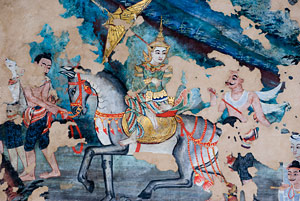
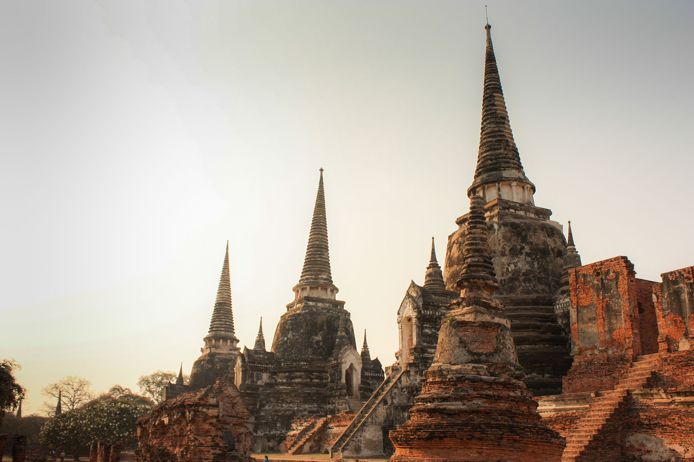
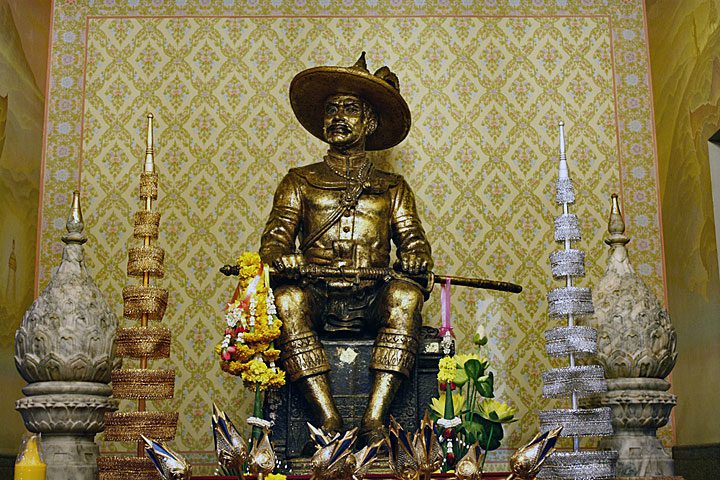

Prehistoric Period: Archaeological evidence suggests that Thailand has been inhabited since prehistoric times. Early human settlements have been found in the Ban Chiang and Ban Prasat sites, indicating advanced Bronze and Iron Age cultures.
Early Kingdoms: By the first millennium CE, various kingdoms had formed in the region. Among the earliest significant cultures were the Mon, Khmer, and Malay civilizations. The Dvaravati culture (6th to 11th centuries) and the Srivijaya Empire influenced the region significantly during this period.

The Classical Period
Sukhothai Kingdom (1238-1438): Often considered the first true Thai kingdom, Sukhothai was founded by King Ramkhamhaeng, who is credited with the creation of the Thai alphabet and the spread of Theravada Buddhism.
Ayutthaya Kingdom (1351-1767): Ayutthaya succeeded Sukhothai as the dominant kingdom. It became a major trading hub in Southeast Asia, attracting merchants from Europe, China, Japan, and India. Ayutthaya is remembered for its splendid architecture and art. It fell to Burmese invaders in 1767.

The Modern Period
Thonburi Kingdom (1767-1782): After the fall of Ayutthaya, General Taksin declared Thonburi as the new capital. His reign was short-lived, ending with his execution.
Rattanakosin Kingdom (1782-present): General Chakri established Bangkok as the new capital and became King Rama I, starting the Chakri Dynasty, which still reigns today. Under King Mongkut (Rama IV) and King Chulalongkorn (Rama V), Thailand modernized and avoided colonialism through diplomacy and selective adoption of Western technologies and reforms.

20th Century to Present
Constitutional Monarchy: In 1932, a bloodless revolution led to the establishment of a constitutional monarchy, ending absolute monarchy. The country was renamed Thailand in 1939.
World War II: Thailand was allied with Japan during much of World War II but became a U.S. ally post-war.
Cold War Era: Thailand experienced numerous military coups and political turmoil but also significant economic growth.
Recent History: The late 20th and early 21st centuries have seen continued political instability, with numerous coups and changes in government. The death of King Bhumibol Adulyadej in 2016 marked the end of a significant era, with his son King Maha Vajiralongkorn ascending the throne.